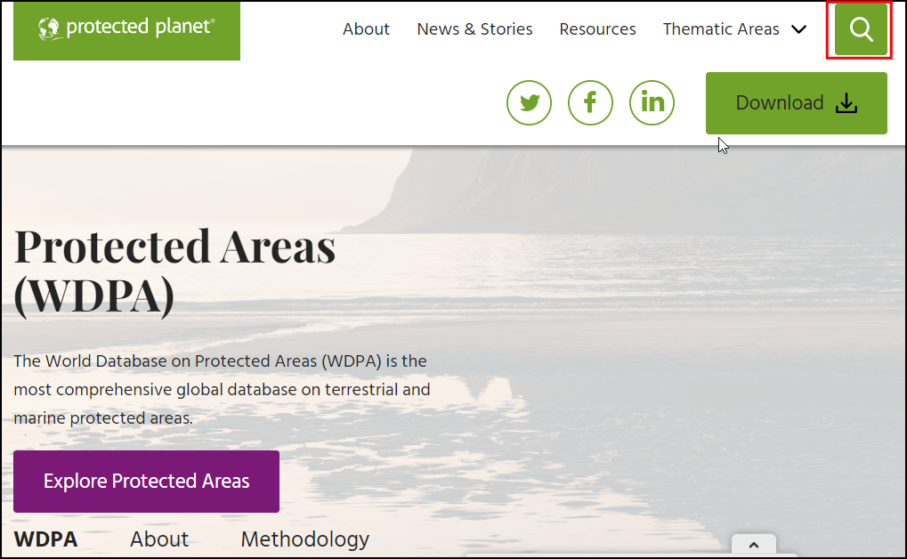
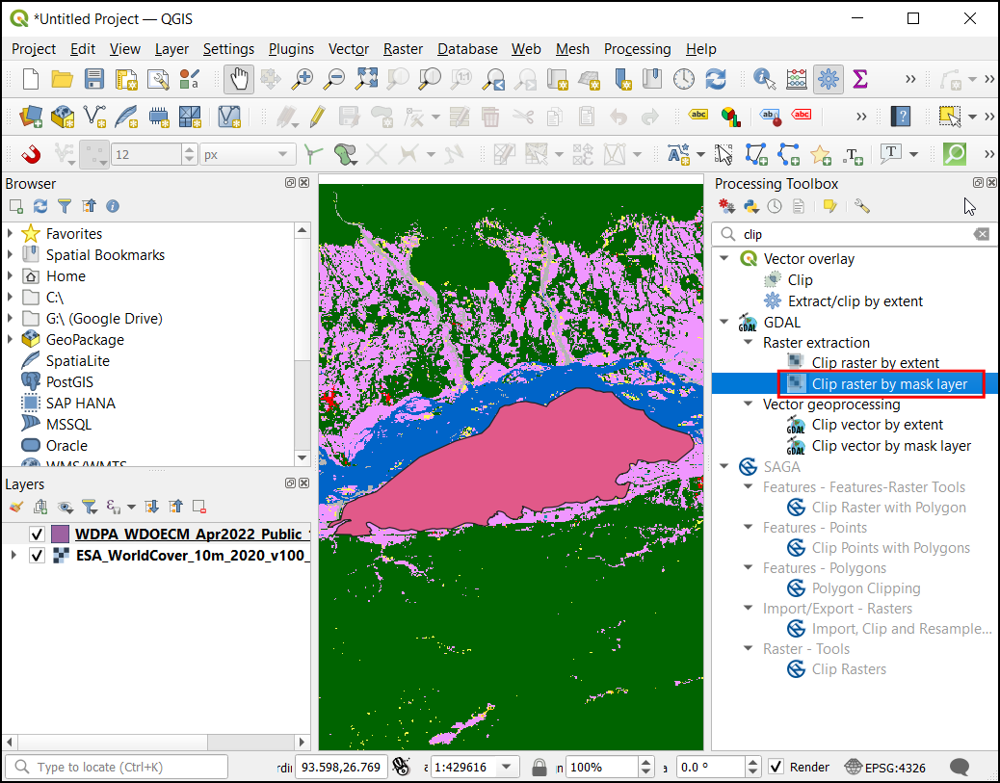
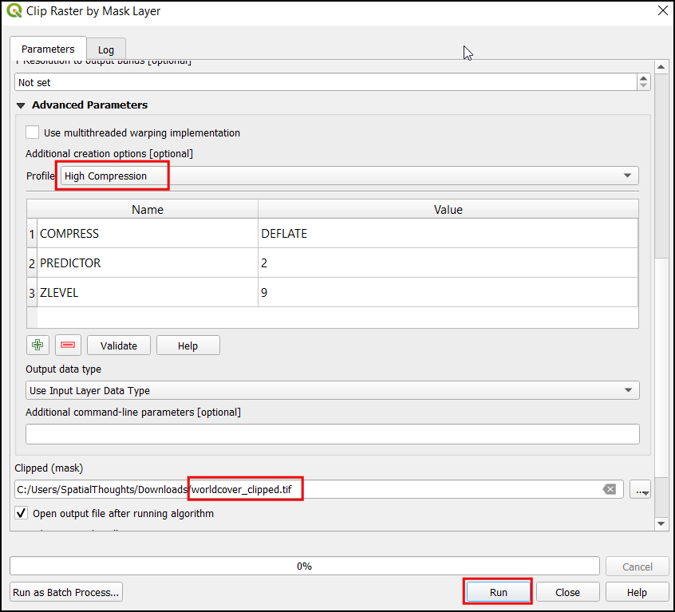
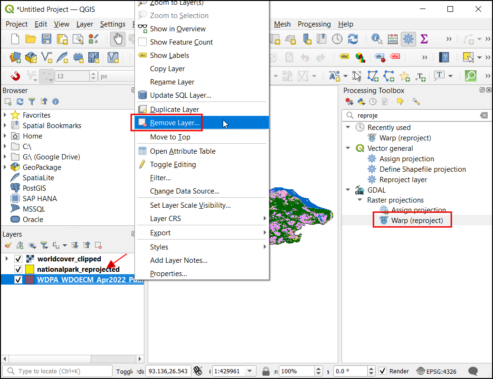
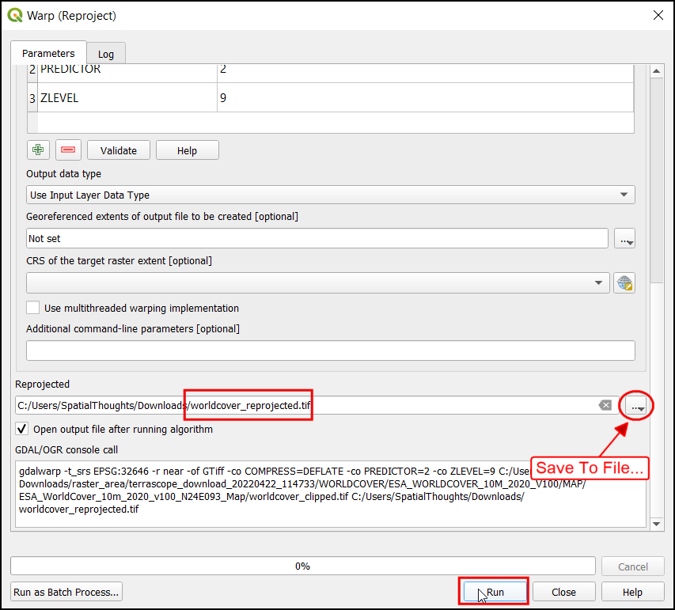
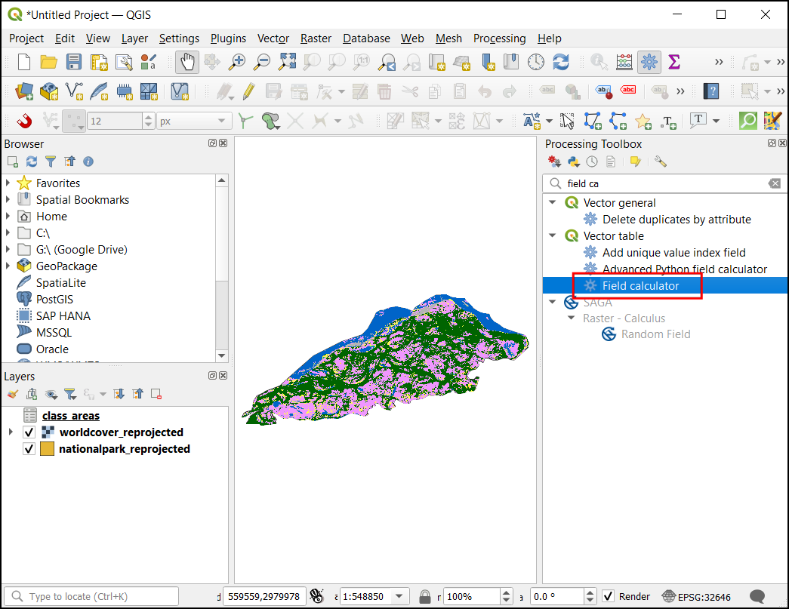
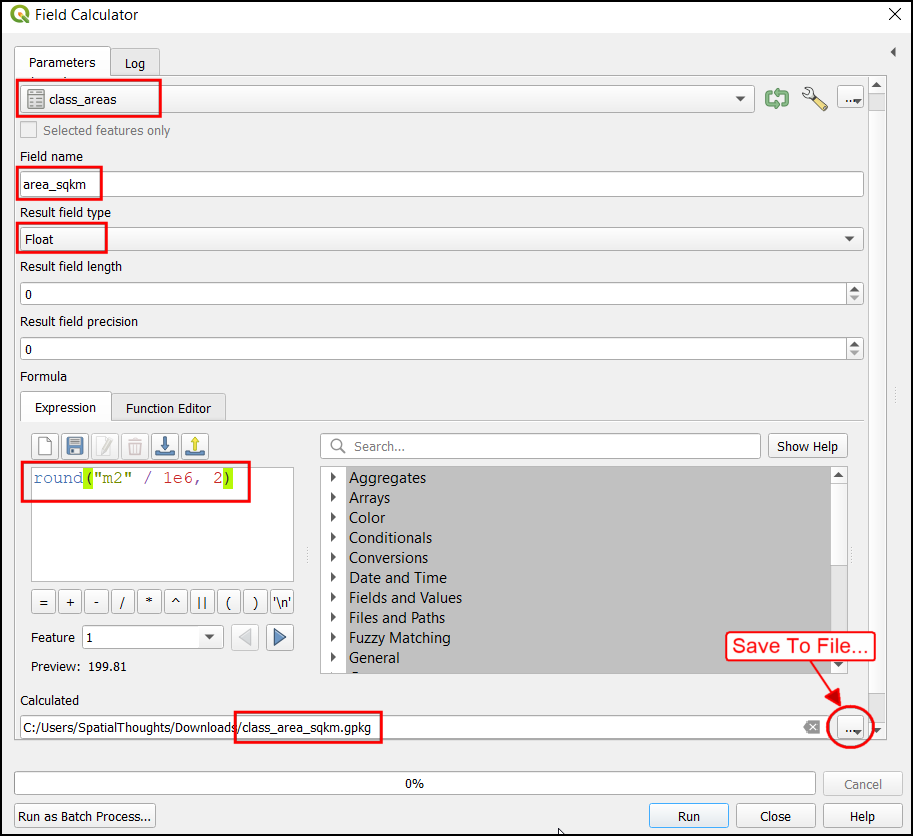
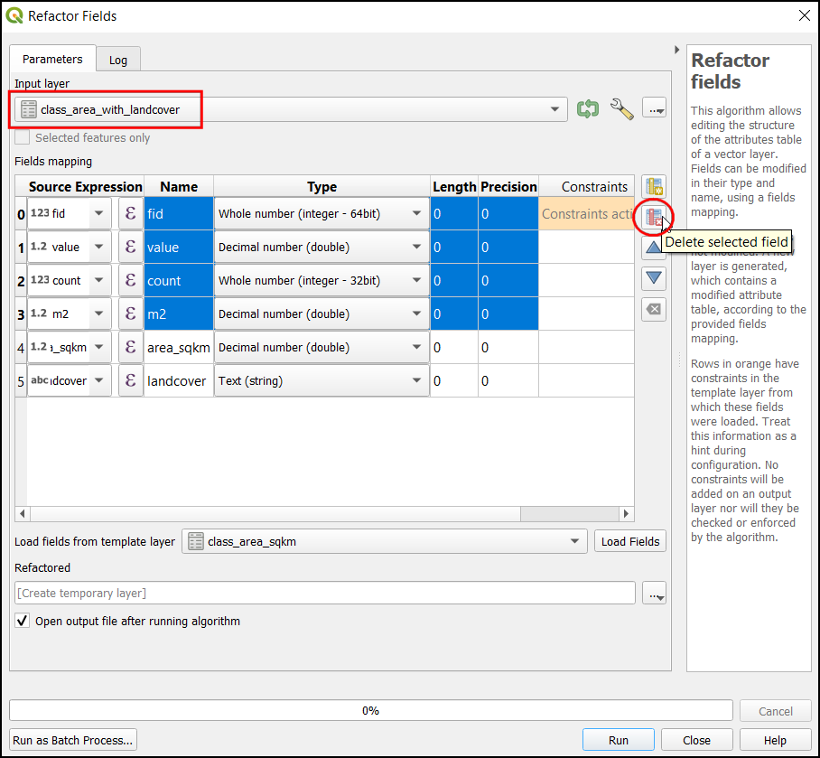
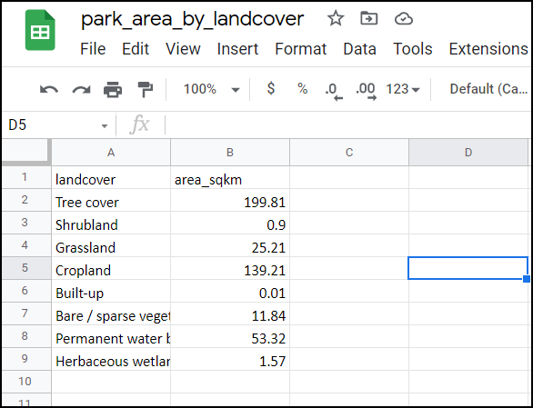

Ujaval Gandhi
Ujaval GandhiCálcular el área ráster (QGIS3)¶
Muchas aplicaciones requieren cuantificar los patrones de uso del suelo en una región. Los conjuntos de datos sobre el uso y cobertura de la tierra (UTCT) se presentan como archivos ráster en los que se asigna a cada píxel un valor de clase. Los analistas de SIG a menudo necesitan generar informes basados en estos datos calculando el área por clase en una región determinada. QGIS viene con muchas herramientas incorporadas para calcular y resumir el área ráster.
Nota
Históricamente, el enfoque sugerido para calcular las áreas de los rásters era convertir el ráster en una capa vectorial y utilizar técnicas de cálculo de áreas vectoriales. Este enfoque es bastante intensivo en términos de computación y propenso a errores. El enfoque recomendado es utilizar la herramienta de procesamiento Informe de valores únicos de la capa rasterizada que puede calcular directamente las áreas de los píxeles. Si tiene una capa con muchos polígonos y necesita áreas para cada uno de ellos, puede utilizar la herramienta Histograma zonal para obtener el recuento de píxeles para cada clase y luego multiplicarlo por el área de cada píxel.
Vista general de la tarea¶
Utilizaremos una capa rasterizada con 11 clases de cobertura del suelo y calcularemos la superficie de cada clase dentro de un parque nacional. También procesaremos los resultados para crear una hoja de cálculo con los nombres de las clases y las áreas.
Otras habilidades que aprenderá¶
Cómo aplicar la simbología a una capa desde un archivo de estilo en formato .qml.
Cómo escribir expresiones con múltiples condiciones if/else utilizando la sentencia CASE.
Cómo exportar una tabla de QGIS como una hoja de cálculo de Excel.
Obtener los datos¶
Vamos a descargar los siguientes conjuntos de datos
Base de Datos Mundial sobre Áreas Protegidas (WDPA): Vamos a descargar el archivo shape de los límites del Parque Nacional de Kaziranga en la India.
ESA WorldCover 2020: El producto WorldCover 10 m 2020 de la Agencia Espacial Europea (ESA) proporciona un mapa global de la cobertura del suelo para el año 2020 con una resolución de 10 m. Descargaremos el mosaico que cubre nuestra región de interés.
Límite del Parque¶
Vaya al sitio web de Protected Planet y haga clic en la caja de herramientas de búsqueda. Busque
Kaziranga National Park.

El límite del vector protegido se mostrará como resultado de la búsqueda. Haga clic en él para ver la página del Kaziranga National Park.

Esta página contendrá información adicional como la superficie total, el año de creación, etc. Haga clic en la etiqueta Download y en la etiqueta SHP para descargar los datos en formato Shapefile.

Se le pedirán dos opciones de descarga. Haga clic en continuar bajo Uso no comercial. Ahora se descargará un archivo zip que contiene los límites del parque nacional.
Datos de Cobertura de la Tierra¶
Vaya al sitio web de ESA WorldCover y haga clic en el menú DATA ACCESS.

Desplácese hasta la sección DATA DOWNLOAD y haga clic en el enlace para abrir el WorldCover viewer

Es necesario crear una cuenta gratuita para descargar los datos. Haga clic en el enlace Registro de la esquina superior derecha. Siga las instrucciones dadas para crear una nueva cuenta.

Después de crear la cuenta, inicie sesión con las credenciales. Nuestra área de interés para este tutorial es el Parque Nacional de Kaziranga. Acérquese a la región del noreste de la India. Una vez que se haya acercado lo suficiente, comenzará a aparecer el cuadro delimitador de los mosaicos de la imagen de la cubierta terrestre.

Busque y localice la región de teselas
N24E093.

Seleccione la tesela y haga clic en NEXT.

Haga clic en :guilabel: DESCARGAR para descargar un archivo zip que contiene la información de la cubierta terrestre en formato raster. Asegúrese de seleccionar los datos WorldCover Version 1 para la descarga.
También descargaremos un archivo de simbología proporcionado por la ESA. Visite la página ESA WorldCover Data Access, Desplácese hacia abajo hasta la sección Symbología. Haga clic en QGIS para descargar el archivo ESAWorldCover_ColorLegend.qml que puede utilizarse para dar estilo a la capa ráster con los colores y etiquetas de clase apropiados.

Para su comodidad, puede descargar directamente una copia de los conjuntos de datos de los enlaces abajo:
Límites del Parque Nacional de Kaziranga WDPA_WDOECM_Apr2022_Public_10744_shp_0.zip
ESA WorldCover Tile N24E093 subset terrascope_download_20220422_114733.zip
ESA WorldCover QML Style file ESAWorldCover_ColorLegend.qml
Fuente de datos [WDPA] [WorldCover]
Procedimiento¶
Descomprima todos los archivos descargados. En el Explorador, localice la carpeta que contiene el archivo de límites
WDPA_WDOECM_Apr2022_Publicc_10744_shp-polygons.shpy arrástrelo y suéltelo en el lienzo de QGIS.

Ahora localice el mosaico rasterizado de la cobertura mundial
ESA_WorldCover_10m_2020_v100_N24_E093_Map.tify suéltelo en el lienzo de QGIS.

Ahora tendrá cargados tanto el límite vectorial como la capa ráster de la cobertura de la tierra en el panel Capas. Vamos a recortar la capa rasterizada de la cubierta vegetal al límite del parque nacional. Vaya a para abrir la caja de herramientas de Processing. Busque y localice el algoritmo . Haga doble clic para iniciarlo.

En el diálogo Recortar ráster por Capa máscara, elija la capa
ESA_WorldCover_10m_2020_v100_N24_E093_Mapcomo Capa de entrada yWDPA_WDOECM_Apr2022_Publicc_10744_shp-polygonscomo Mask Layer. Introduzca-9999en la sección Asignar un valor sindato especificado a las bandas de salida`.

Ahora abra la sección Parámetros Avanzados y elija
Alta Compresiónen Perfil. Ahora en Clipped (mask), haga clic en el botón...y seleccione Guardar a archivo…. Introduzca el nombre del archivo comoworldcover_clipped.tif. Haga clic en Ejecutar.

Ahora la capa
worldcover_clippedse cargará en el lienzo de QGIS. Haga clic con el botón derecho en la capaESA_WorldCover_10m_2020_v100_N24_E093_Mapy seleccione Quitar capa…`.

Nuestras dos capas vienen en el SRC geográfico
EPSG:4326. Este SRC tiene unidades de grados y no es adecuado para calcular el área. Primero debemos reproyectar las capas a un SRC proyectado. Para análisis regionales como estos, UTM es una buena opción para un SRC proyectado. Reproyectaremos las capas al SRC para la zona UTM local. Abra la caja de herramientas de Processing y busque el algoritmo . Haga doble clic para lanzarlo.

En el cuadro de diálogo Reproyectar capa, elija la capa
WDPA_WDOECM_Apr2022_Publicc_10744_shp-polygonscomo la Capa de entrada, haga clic en el botón Seleccionar SRC bajo SRC destino.

Nuestra área de interés cae en la zona UTM 46N. Busque 46 N y seleccione el SRC
WGS 84 / Zona UTM 46N.

Nota
Para saber cuál es la zona UTM de su región, consulte la página web Qué zona UTM tengo.
En la sección Reprojected, haga clic en
...y seleccione Guardar a archivo…`. Introduzca el nombre comonationalpark_reprojected.gpkg. Haz clic en Ejecutar.

Ahora la capa
nationalpark_reprojectedse cargará en el lienzo. Haga clic con el botón derecho en la capaWDPA_WDOECM_Apr2022_Publicc_10744_shp-polygonsy seleccione Quitar capa…` para eliminarla. Ahora reproyectaremos la capa rasterizada. En la caja de herramientas Caja de herramientas Procesos, busque y localice

En el cuadro de diálogo Combar (Reproyectar) elija
worldcover_clippedcomo Capa de entrada, seleccioneWGS 84 / UTM zone 46NCRS en SRC destino. Abra el menú Parámetros avanzados y seleccioneAlta compresiónen Perfil.

Ahora en Reprojected, haz clic en
...y selecciona Guardar a archivo…`. Introduzca el nombre comoworldcover_reprojected.tif. Haga clic en Ejecutar.

Ahora la capa
worldcover_reprojectedse cargará en el lienzo, elimine la capaworldcover_clipped. Vamos a establecer la capa del proyecto en la zona UTM. Haga clic en cualquier capa y elija .

Ahora se actualizará el SRC del proyecto. Establezcamos la simbología de la capa ráster según los nombres de clase y los colores del conjunto de datos ESA WorldCover. Haga clic con el botón derecho del ratón en la capa
worldcover_reprojectedy haga clic en Propiedades…`.

En el cuadro de diálogo Propiedades de la capa, seleccione Simbología. Puede observar que los colores de la capa se visualizan en un tono blanco-negro. Para solucionarlo, haga clic en la :menuselección:`Estilo --> Cargar estilo...`. Busque y seleccione el archivo
ESAWorldCover_ColorLegend.qml.

Ahora puede ver los colores de los símbolos actualizados y las descripciones de las clases. Haga clic en Aceptar.

Expanda la capa
worldcover_reprojecteden el panel Capas para ver la leyenda con las descripciones correctas de las clases.

Ahora vamos a calcular el área de cada clase. En la caja de herramientas de procesamiento, busque y localice la herramienta Informe de valores únicos de capas rasterizadas. Haga doble clic para abrirla.
En el cuadro de diálogo Informe de valores únicos de capas rasterizadas, elija la Capa de entrada como
worldcover_reprojected. Bajo la Tabla de valores únicos haga clic en...y elija Guardar en archivo…`. Introduzca el nombre comoclass_areas.gpkg. Haga clic en Ejecutar.

Ahora la capa
class_areasse añadirá al panel Capas. Haga clic con el botón derecho en la capa y haga clic en Abrir tabla de atributos. La columnam2contiene el área de cada clase en metros cuadrados.

Convirtamos el área en kilómetros cuadrados. En la Caja de herramientas de procesamiento, busque y seleccione .

En el cuadro de diálogo Calculadora de campos, seleccione la capa
class_areasen la Capa de entrada`. Introduzca el Nombre del campo comoarea_sqkm. En la etiqueta Resultado tipo de campo seleccioneFloat. En la ventana Expresión, introduzca la siguiente expresión. Esto convertirá el sqmt en sqkm y redondeará el resultado a 2 decimales. En la ventana Calculado haga clic en...y elija Guardar en archivo…`. Introduzca el nombre comoclass_area_sqkm.gpkg. Haga clic en Ejecutar.
round("m2"/ 1e6, 2)
Ahora la capa
class_area_sqkmse cargará en el lienzo. Abra la tabla de atributos y examine la columna area_sqkm recién añadida. Observará que la columna Valor contiene números para cada clase. Para facilitar la interpretación de los resultados, vamos a añadir también la descripción de cada número de clase. Las descripciones de las clases están disponibles en el Manual de usuario de productos de ESA.

Abra la calculadora de campos y seleccione la capa
class_areas_sqkmen Capa de entrada. Introduzca en Nombre de campo como landcover, en Tipo de campo resultado, elijaString. En la ventana Expresión introduzca la siguiente expresión. Esta expresión utiliza la sentencia CASE para asignar un valor basado en múltiples condiciones. En la ventana Calculado haga clic en...y elija Guardar en archivo…`. Introduzca el nombre comoclase_área_con_cubierta.gpkg. Haga clic en Ejecutar.
CASE WHEN "value" = 10 THEN 'Tree cover' WHEN "value" = 20 THEN 'Shrubland' WHEN "value" = 30 THEN 'Grassland' WHEN "value" = 40 THEN 'Cropland' WHEN "value" = 50 THEN 'Built-up' WHEN "value" = 60 THEN 'Bare / sparse vegetation' WHEN "value" = 70 THEN 'Snow and Ice' WHEN "value" = 80 THEN 'Permanent water bodies' WHEN "value" = 90 THEN 'Herbaceous wetland' WHEN "value" = 95 THEN 'Moss and lichen' WHEN "value" = 100 THEN 'Mangroves' END
Ahora la capa
class_area_with_landcoverse cargará en el lienzo. Abra la tabla de atributos. La columna landcover contendrá el nombre del landcover contra cada valor de la cobertura de la tierra.

Vamos a exportar este resultado como un archivo Excel. Antes de exportar también organizaremos la tabla y eliminaremos los campos no deseados. En la Caja de herramientas Procesos, busque y seleccione .

En el cuadro de diálogo Rehacer campos, seleccione la capa
class_area_with_landcoveren la Capa de entrada. Seleccione todas las columnas excepto area_sqkm y landcover, y haga clic en Borrar campo seleccionado.

También puede cambiar el orden de los campos en la tabla utilizando el botón Mover campos seleccionados. Una vez que haya terminado con las ediciones, haga clic en el botón
...junto a Refactored y elija Guardar a archivo…`. SeleccioneArchivos XLSX (*.xlsx)como formato. Introduzca el nombre del archivo comopark_area_by_landcover.xlsxy haga clic en Guardar. En el cuadro de diálogo Rehacer campos, haga clic en Ejecutar para aplicar los cambios.

El resultado será una hoja de cálculo con las columnas landcover y area_sqkm.

If you want to give feedback or share your experience with this tutorial, please comment below. (requires GitHub account)